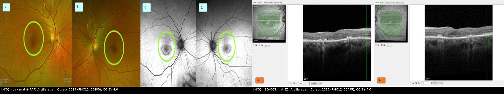
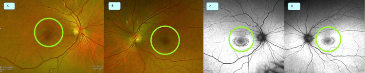
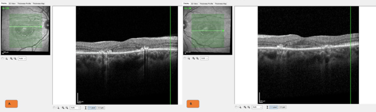
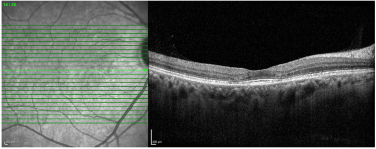

484 — Nhiễm độc võng mạc do hydroxychloroquine: sàng lọc, ngưỡng liều & phân biệt với bệnh võng mạc lupus / Hydroxychloroquine retinopathy
Tags: pattern:mat-EZ-canh-hoang-diem vung:hoang-diem score:AAO-nguy-co protocol:SD-OCT-FAF-thi-truong-10-2
Mức chắc chắn (certainty): tổng hợp y văn (literature synthesis) — tự biên từ 2 bài mở CC BY 4.0 (review hình ảnh Diagnostics 2023 + loạt ca Cureus 2025), số liệu lấy nguyên từ bài gốc, tên tác giả đối chiếu PMCID.
Bài này trả lời "ai cần tầm soát, chụp gì, đọc gì, khi nào ngừng thuốc" — không phải bài chẩn đoán bệnh võng mạc lupus. 455 – Behçet & lupus tại mắt phủ tổn thương võng mạc do chính bệnh lupus (vi mạch, xuất tiết, thiếu máu võng mạc); 453 – Bệnh võng mạc tăng huyết áp & thiếu máu phủ tổn thương mạch máu toàn thân tại võng mạc; 441 – OCT hoàng điểm phủ kỹ thuật đọc OCT. Bài này dành cho bệnh nhân đang dùng hydroxychloroquine (HCQ), cho bác sĩ CĐHA/mắt phải đọc ảnh sàng lọc ở người không triệu chứng và quyết định ngừng thuốc — nơi mà "thị lực 20/20" không loại trừ được gì.
1. Tổng quan bệnh học – cơ chế hình ảnh
1.1 Vì sao HCQ ăn vào võng mạc, và vì sao tổn thương nằm cạnh hố trung tâm
- HCQ là thuốc ưa mỡ, tích điện kiềm yếu (lysosomotropic): dạng base tự do qua được màng tế bào, tích tụ trong lysosome, làm tăng pH trong lysosome → mất ổn định lysosome, ức chế phân giải protein và ức chế thực bào đoạn ngoài tế bào cảm quang ở tế bào biểu mô sắc tố (RPE). Đây là cơ chế vừa ức chế miễn dịch (tác dụng điều trị) vừa gây độc võng mạc.
- HCQ gắn melanin và tồn tại lâu trong RPE → tổn thương có thể tiếp tục tiến triển sau khi ngừng thuốc, nên "ngừng là xong" chỉ đúng khi phát hiện rất sớm. Bài gốc ghi rõ nguy cơ này và đó là lý do chính phải sàng lọc định kỳ.
- Vì sao tổn thương cạnh hoàng điểm chứ không phải đúng hố trung tâm: vùng cạnh hoàng điểm (2–6°) và quanh trung tâm (≥ 8°) có mật độ tế bào cảm quang và nhu cầu chuyển hóa cao nhất, trong khi hố trung tâm chỉ có tế bào nón, không có mạch máu, được nuôi từ màng mạch (choriocapillaris) — nên hố trung tâm được bảo tồn lâu, tạo hình ảnh "đĩa bay" (flying saucer) / "mũ sombrero": vùng mỏng đi nằm quanh một hố trung tâm còn dày.
- Hệ quả về mặt đọc ảnh: tổn thương bắt đầu ở lớp ngoài (ellipsoid zone — EZ, tức dải sáng của đoạn trong tế bào nón; interdigitation zone; nhân ngoài — ONL) rồi mới tới RPE. Vì vậy đọc OCT từ lớp ngoài lên, không chỉ nhìn "độ dày võng mạc" — bản đồ dày võng mạc có thể bình thường khi EZ đã mất từng đoạn.
- Tại sao FAF bắt được tổn thương: FAF đo lipofuscin trong RPE (kích thích ~488 nm, thu ~500–750 nm). RPE còn sống nhưng quá tải → tăng tự huỳnh quang (hyperautofluorescence); RPE đã chết/mất → giảm tự huỳnh quang (hypoautofluorescence). Vì vậy FAF sớm = vòng tăng huỳnh quang cạnh hoàng điểm, muộn = vòng giảm huỳnh quang tạo hình "mắt bò" (bull's eye).
- Vì sao HCQ gây "mắt bò" muộn mà thị lực vẫn tốt: tổn thương né hố trung tâm nên thị lực trung tâm còn nguyên; bệnh nhân chỉ mất thị trường vòng quanh trung tâm (ring scotoma) — thứ không thể phát hiện nếu không làm thị trường 10-2. Đây là điểm chết người về mặt lâm sàng: thị lực 20/20 + đáy mắt "bình thường" ≠ không có độc tính.
1.2 Ngưỡng định lượng nằm lòng (bắt buộc nhớ)
- Tỷ lệ mắc: khoảng 7,5% chung, nhưng tăng tới 20–50% sau 2 thập kỷ dùng thuốc; con số thay đổi theo liều, thời gian và phương thức hình ảnh dùng để phát hiện.
- Yếu tố nguy cơ (đủ để đổi lịch sàng lọc): liều > 5 mg/kg/ngày (cân nặng thực tế), dùng đồng thời tamoxifen, suy thận với eGFR < 60 mL/phút/1,73 m²**, **bệnh võng mạc nền**, **thời gian dùng > 5 năm.
- Liều: chuẩn hiện hành là ≤ 5 mg/kg cân nặng thực tế/ngày; trước 2016 từng dùng 6,5 mg/kg cân nặng lý tưởng. Ở người béo, hai cách tính cho kết quả rất khác — và đã có ca nồng độ HCQ trong máu cao bất thường dù "đúng liều theo cân nặng", gợi ý cần theo dõi nồng độ thuốc ở ca chọn lọc.
- Hai kiểu phân bố tổn thương (quan trọng cho người châu Á):
- Cạnh hoàng điểm (parafoveal, 2–6°): kiểu "kinh điển" ở người da trắng.
- Quanh trung tâm (pericentral, ≥ 8°): trong loạt 201 bệnh nhân (18% châu Á), kiểu đơn thuần quanh trung tâm gặp 50% ở người châu Á vs 2% ở người da trắng; nhóm này dùng thuốc lâu hơn (19,5 vs 15,0 năm) và tổng liều tích lũy cao hơn (2.186 g vs 1.813 g) → được chẩn đoán muộn hơn. Vì vậy ở bệnh nhân châu Á phải chụp rộng ra ngoài hoàng điểm (FAF góc rộng/widefield), không chỉ macula 30°.
2. Mẫu hình + chẩn đoán phân biệt theo vị trí (gamut)
Câu hỏi lọc: "Mất lớp ngoài võng mạc nằm ở đâu so với hố trung tâm, và hố trung tâm có được bảo tồn không?" — vị trí + kiểu bảo tồn hố trung tâm quyết định chẩn đoán, không phải mức giảm thị lực.
- Mất EZ dạng vòng cạnh hoàng điểm (2–6°), hố trung tâm còn nguyên: nhiễm độc HCQ/chloroquine (kiểu parafoveal) — điển hình nhất.
- Mất EZ vùng quanh trung tâm (≥ 8°), có thể lan ra ngoài hậu cực: nhiễm độc HCQ kiểu pericentral — hay gặp ở người châu Á, dễ bỏ sót nếu chỉ chụp macula hẹp.
- Mất EZ + nang nhỏ trong võng mạc ngoài ("pseudocystic spaces") ở hoàng điểm: bệnh võng mạc do tamoxifen — khác HCQ, và tamoxifen dùng đồng thời làm tăng nguy cơ HCQ.
- Tổn thương mạch máu: xuất tiết bông, xuất huyết trong võng mạc, giãn mao mạch, thiếu tưới máu trên FFA: bệnh võng mạc lupus đang hoạt động — tổn thương theo mạch, không phải mất lớp ngoài đối xứng hai bên.
- Mất EZ + tăng huỳnh quang, nhưng có tân mạch hắc mạc (CNV) hoặc dịch dưới võng mạc: nghĩ thoái hóa điểm vàng liên quan tuổi / cận huyết (pachychoroid) hơn là độc tính thuốc.
- Bất thường EZ đối xứng + tiền sử dùng thuốc khác (clofazimine, deferoxamine, MEK inhibitor, fludarabine): nhiễm độc thuốc khác — hình ảnh có thể giống, phải hỏi toàn bộ đơn thuốc, không chỉ HCQ.
Gamut theo cơ chế: tổn thương lysosome/RPE (HCQ, chloroquine) → mất tế bào cảm quang lớp ngoài (EZ) → mất RPE (hypoAF, "mắt bò") → mất thị trường vòng và cuối cùng mất thị lực trung tâm khi tổn thương lan vào hố trung tâm.
3. Bảng so sánh phân biệt (ma trận đối chiếu)
3.1 HCQ retinopathy vs các bệnh cảnh "mất lớp ngoài võng mạc"
| Bệnh cảnh | Dấu hiệu chốt trên OCT/FAF | Chốt vào (rule-in) | Chốt loại (rule-out) | Theo dõi / xử trí |
|---|---|---|---|---|
| Nhiễm độc HCQ — kiểu cạnh hoàng điểm | Mất/giảm EZ 2–6° quanh hố trung tâm, ONL mỏng, hố trung tâm còn nguyên ("flying saucer"); FAF vòng tăng rồi giảm huỳnh quang cạnh hoàng điểm | Đối xứng hai bên + đúng vùng cạnh hoàng điểm + đang dùng HCQ > 5 năm hoặc liều > 5 mg/kg | Tổn thương một bên, có dịch/CNV, có xuất huyết → không phải độc tính thuốc | Ngừng HCQ khi có tổn thương chắc chắn; chụp lại 6–12 tháng vì có thể tiến triển sau khi ngừng |
| Nhiễm độc HCQ — kiểu quanh trung tâm | Mất EZ ≥ 8°, có thể ngoài phạm vi macula 30°; FAF góc rộng thấy vòng huỳnh quang lệch tâm | Bệnh nhân châu Á + dùng lâu năm + FAF góc rộng bất thường | Macula 30° bình thường không loại trừ — đây là cạm bẫy chính | Chụp widefield FAF/OCT khi nghi ngờ; ngừng thuốc |
| Bệnh võng mạc lupus | Xuất tiết bông, xuất huyết, giãn mao mạch, thiếu tưới máu trên FFA, phù hoàng điểm | Bệnh lupus đang hoạt động + tổn thương mạch máu | Mất lớp ngoài đối xứng, không xuất huyết, không rò mạch → không phải lupus | Điều trị lupus; không ngừng HCQ vì lý do này |
| Bệnh võng mạc do tamoxifen | Nang nhỏ/tổn thương dạng nang trong võng mạc ngoài, chấm tinh thể, mất EZ; có thể giảm thị lực sớm | Tiền sử tamoxifen, tổn thương dạng nang/tinh thể | Chỉ mất EZ dạng vòng điển hình, không nang → nghĩ HCQ hơn | Ngừng tamoxifen theo ung thư; phối hợp theo dõi |
| Thoái hóa điểm vàng / bệnh mạch hắc mạc | Drusen, dịch dưới võng mạc, CNV, thay đổi RPE không đối xứng | CNV/dịch/drusen | Đối xứng hai bên, không drusen, không dịch → không phải thoái hóa | Điều trị theo phác đồ (anti-VEGF/PDT) |
3.2 Bảng "đọc nhanh" theo phương thức (lấy từ review 2023)
| Phương thức | Dấu hiệu của HCQ | Giá trị thực hành |
|---|---|---|
| SD-OCT | Mất/giảm EZ, mất IZ, ONL mỏng, "flying saucer"/"sombrero", mỏng phức hợp RPE–Bruch | Nhạy và đặc hiệu hơn FAF; thay đổi sớm có thể chủ quan/khó thấy |
| FAF | Tăng và/hoặc giảm huỳnh quang cạnh hoàng điểm hoặc quanh trung tâm, né hố trung tâm; muộn = "mắt bò" | Xem nhanh toàn hậu cực trong một ảnh, đối chiếu với OCT; phát hiện sớm kém hơn SD-OCT |
| Thị trường 10-2 | Cung scotoma quanh trung tâm, có khi trước thay đổi thấy được | Bắt buộc trong bộ sàng lọc; giải thích vì sao bệnh nhân "20/20 mà vẫn độc" |
| OCTA | Giảm mật độ mạch đám rối nông và sâu, signal void ở choriocapillaris, FAZ lớn hơn | Hứa hẹn phát hiện sớm, chưa đủ bằng chứng để thay bộ sàng lọc chuẩn |
| FAF góc rộng / OCT góc rộng | Vòng huỳnh quang lệch tâm, mất EZ ngoài macula | Cần cho bệnh nhân châu Á (kiểu pericentral) |

*Trái: đáy mắt màu (A,B) và FAF (C,D) — vòng teo/giảm sắc tố đồng tâm quanh hố trung tâm hai bên, điển hình "mắt bò"; phải: SD-OCT hai mắt — mất ellipsoid zone cạnh hoàng điểm, hố trung tâm còn nguyên (Arcilla CK et al., Cureus 2025, PMC12450495, CC BY 4.0, Fig. 1–2). Ảnh ghép letterbox, giữ nguyên tỷ lệ.*4. Protocol sàng lọc + phân tầng nguy cơ
4.1 Ai, khi nào, chụp gì
- Đường cơ sở (baseline): trong vòng 1 năm từ khi bắt đầu HCQ — để có ảnh so sánh về sau, không phải để "tầm soát" (chưa thể có độc tính).
- Sàng lọc định kỳ: hằng năm bắt đầu từ năm thứ 5 ở người không có yếu tố nguy cơ.
- Sàng lọc sớm hơn/đều hơn (hằng năm ngay từ đầu) khi có ≥ 1 yếu tố nguy cơ: liều > 5 mg/kg/ngày, eGFR < 60**, **tamoxifen đồng thời**, **bệnh võng mạc nền**, hoặc **thời gian dùng đã > 5 năm.
- Bộ ba bắt buộc mỗi lần sàng lọc: SD-OCT macula + FAF + thị trường tự động 10-2 (trắng/đỏ). Thêm FAF/OCT góc rộng ở bệnh nhân châu Á hoặc khi OCT macula 30° không giải thích được triệu chứng.
- Không dùng đáy mắt soi đèn khe đơn thuần để "loại trừ": hình "mắt bò" là dấu hiệu muộn; giai đoạn sớm chỉ có trên OCT/FAF/thị trường.
4.2 Đọc kết quả theo bậc (và ngưỡng hành động)
- Nghi ngờ (suspect): bất thường một dấu hiệu, chưa chắc chắn, có thể do chất lượng ảnh/tilt cận thị → chụp lại 3–6 tháng, kiểm tra kỹ thuật, so ảnh cũ.
- Chắc chắn (definite): mất EZ cạnh hoàng điểm đối xứng hai bên + bất thường FAF tương ứng ± scotoma 10-2 → ngừng HCQ (phối hợp thấp khớp/lupus để thay thuốc).
- Muộn/nặng: "mắt bò" trên FAF, mất EZ lan rộng, scotoma vòng rõ → ngừng ngay; giải thích nguy cơ tiếp tục tiến triển dù đã ngừng và lịch theo dõi dài hạn.
- Sau khi ngừng: chụp lại 6–12 tháng/lần trong vài năm đầu; nếu ổn định → thưa dần. Không hứa "sẽ hồi phục".
4.3 Sơ đồ quyết định
flowchart TD
A[Benh nhan bat dau HCQ] --> B[Baseline trong 1 nam: SD-OCT + FAF + thi truong 10-2]
B --> C{Co yeu to nguy co?}
C -->|Lieu >5 mg/kg, eGFR <60, tamoxifen, benh vong mac nen| D[Sang loc HANG NAM tu nam 1]
C -->|Khong| E[Sang loc hang nam tu nam thu 5]
D --> F{Mat EZ canh hoang diem doi xung?}
E --> F
F -->|Khong| G[FAF bat thuong?]
G -->|Khong| E
G -->|Co| H[Chup lai 3-6 thang + FAF/OCT goc rong]
F -->|Co| I[FAF + thi truong 10-2 tuong ung]
I --> J{Du 2/3 dau hieu?}
J -->|Co| K[NGUNG HCQ - thong bao thap khop/lupus]
J -->|Khong| H
K --> L[Theo doi 6-12 thang: co the tien trien sau khi ngung]
H --> F
5. Biến thể bình thường và cạm bẫy
- Lắng đọng giác mạc (corneal verticillata): HCQ có thể kết tinh trong biểu mô giác mạc thành hình xoáy — lành tính, hồi phục, không phải dấu hiệu độc võng mạc; đừng vì thấy nó mà kết luận "đã nhiễm độc" hoặc ngược lại bỏ qua OCT.
- "Thị lực 20/20" không loại trừ: ca điển hình trong bài gốc có thị lực 20/20 hai mắt, sắc giác 6/8, nhưng FAF "mắt bò", OCT mất EZ cạnh hoàng điểm, thị trường vòng và mfERG giảm biên độ. Nếu chỉ đo thị lực, ca này bị bỏ qua.
- Chụp macula 30° bình thường ở người châu Á: kiểu quanh trung tâm ≥ 8° có thể nằm ngoài khung 30° → "bình thường" giả. Phải chụp rộng khi có nghi ngờ.
- Ảnh OCT chất lượng kém/tilt: mất EZ giả do cắt lớp xiên hoặc đường quét không vuông góc; luôn kiểm tra đường quét (B-scan qua hố trung tâm) và đối chiếu hai mắt.
- Tamoxifen dùng chung: có thể gây nang võng mạc ngoài và làm tăng nguy cơ HCQ; thấy nang → nghĩ tamoxifen, nhưng đừng bỏ qua HCQ.
- Bệnh võng mạc lupus đang hoạt động: có xuất tiết bông/xuất huyết/thiếu tưới máu → không phải độc tính thuốc, không ngừng HCQ (ngừng có thể làm lupus bùng phát).
- Độc tính ngoài mắt: HCQ còn gây độc tim (QTc kéo dài, bệnh cơ tim) — ca trong bài gốc có QTc 618 ms sau 10 năm với liều 3,6 mg/kg; bệnh nhân ngất/kéo dài QTc khi dùng HCQ cần đánh giá tim mạch, không chỉ mắt.
- Nồng độ thuốc trong máu: đã ghi nhận nồng độ cao bất thường dù liều "đúng" theo cân nặng → với ca có độc tính không tương xứng với liều, xem xét theo dõi nồng độ thay vì chỉ giảm liều theo cân nặng.
6. Tự lượng giá — Blind Quiz
Ca 1 — Nữ 50 tuổi, lupus dạng đĩa, HCQ 200 mg × 2/ngày hơn 20 năm (4,6 mg/kg). Nhìn "vòng tròn có ánh sáng", rèm cửa bị "lượn sóng" 6 tháng. Thị lực 20/20 hai mắt. Đáy mắt + FAF dưới đây.

- Hỏi: (1) Vòng tròn trên ảnh màu và trên FAF là gì? (2) Vì sao thị lực vẫn 20/20? (3) Bước tiếp theo bắt buộc?
Bấm để hiện đáp án (findings + chẩn đoán)
- Findings: (A,B) vòng teo/giảm sắc tố đồng tâm quanh hố trung tâm hai bên = "mắt bò" (bull's eye); (C,D) FAF giảm huỳnh quang trung tâm mạnh với vòng bất thường quanh hố trung tâm, né hố trung tâm.
- Chẩn đoán: nhiễm độc võng mạc HCQ giai đoạn muộn (dùng > 20 năm, 4,6 mg/kg — liều "đúng" nhưng thời gian quá dài).
- Vì sao 20/20: tổn thương né hố trung tâm → còn thị lực trung tâm; mất thị trường vòng quanh trung tâm (bài gốc: scotoma vòng hai bên, mfERG giảm).
- Bước tiếp theo: ngừng HCQ ngay + phối hợp thấp khớp/lupus; thị trường 10-2 + OCT để đánh giá mức; theo dõi dài hạn (có thể tiến triển sau ngừng).
- Nguồn ảnh: Arcilla CK et al., Cureus 2025 (PMC12450495), CC BY 4.0 — Fig. 1 (A–D).
Ca 2 — Cùng bệnh nhân, SD-OCT hai mắt.

- Hỏi: (1) Lớp nào mất, lớp nào còn? (2) Vì sao gọi là "flying saucer"? (3) Nếu chỉ nhìn bản đồ độ dày võng mạc thì có thể kết luận gì sai?
Bấm để hiện đáp án
- Findings: (A,B) mất/gián đoạn ellipsoid zone (EZ) ở vùng cạnh hoàng điểm hai bên; hố trung tâm còn EZ; các lớp trong còn tương đối.
- "Flying saucer": vùng mỏng đi quanh một hố trung tâm còn dày → mặt cắt giống đĩa bay/mũ sombrero; đây là dấu hiệu trung bình–nặng, không phải sớm.
- Sai lầm nếu chỉ nhìn bản đồ dày: độ dày trung bình có thể bình thường vì tổn thương khu trú vòng cạnh hoàng điểm và bù trừ; phải đọc từng B-scan qua hố trung tâm và so hai mắt.
- Nguồn ảnh: Arcilla CK et al., Cureus 2025 (PMC12450495), CC BY 4.0 — Fig. 2 (A,B).
Ca 3 — Bệnh nhân khác, OCT macula: mất EZ cạnh hoàng điểm nhưng chưa có "mắt bò" trên đáy mắt.

- Hỏi: (1) Đây là giai đoạn nào? (2) Vì sao FAF có thể chưa thấy bất thường? (3) Có nên chờ "mắt bò" rồi mới ngừng thuốc?
Bấm để hiện đáp án
- Findings: mất EZ cạnh hoàng điểm, ONL mỏng, hố trung tâm còn nguyên; đáy mắt chưa có vòng "mắt bò" rõ.
- Giai đoạn: sớm–trung gian — tổn thương lớp ngoài đã có, RPE chưa mất nên FAF còn bình thường/không rõ (review ghi FAF phát hiện sớm kém hơn SD-OCT).
- Không chờ "mắt bò": "mắt bò" là dấu hiệu muộn; ngưỡng ngừng thuốc là mất EZ cạnh hoàng điểm đối xứng + bất thường FAF/thị trường tương ứng — chờ hình "mắt bò" = mất thêm tế bào cảm quang không hồi phục.
- Nguồn ảnh: Cheong KX et al., Diagnostics 2023 (PMC10217485), CC BY 4.0 — Fig. 1.
Bài liên quan chéo
- 455 – Behçet & lupus tại mắt
- 453 – Bệnh võng mạc tăng huyết áp & thiếu máu
- 441 – OCT hoàng điểm
- 443 – Bệnh võng mạc đái tháo đường
- 470 – CSCR do corticosteroid: mất thị lực không đau
- 434 – Teo thị thần kinh thị do độc & LHON
- 460 – Can thiệp mắt: tiêm nội dịch kính & anti-VEGF
Ảnh
images/484_hcq-bulls-eye_Fundus_PMC12450495.jpg,images/484_hcq-EZ-loss_OCT_PMC12450495.jpg— Arcilla CK et al., Cureus 2025 (PMC12450495), CC BY 4.0.images/484_hcq-parafoveal_OCT_PMC10217485.jpg— Cheong KX et al., Diagnostics 2023 (PMC10217485), CC BY 4.0.images/composite_484_bulls-eye-va-OCT.jpg— ảnh ghép từ hai bài CC BY 4.0 trên (letterbox, không crop/kéo giãn).- Nguồn + giấy phép từng ảnh:
images/CREDITS.md.
Không dùng để chẩn đoán độc lập khi chưa có người hướng dẫn.